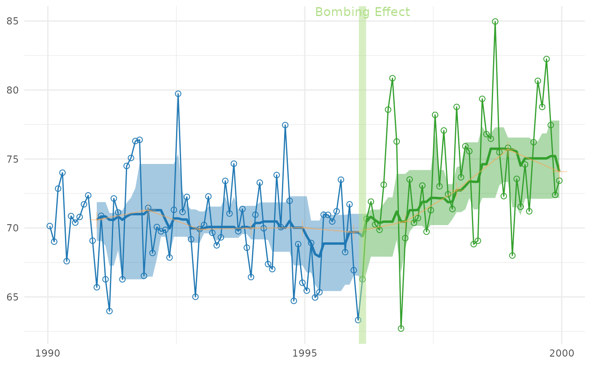

Shows the interrupted time series in Cartesian coordinates without a periodic/cyclic components.
Usage
CartesianRolling(
dsLinear,
xName,
yName,
stageIDName,
rollingLowerName = "RollingLower",
rollingCenterName = "RollingCenter",
rollingUpperName = "RollingUpper",
paletteDark = NULL,
paletteLight = NULL,
colorSparse = grDevices::adjustcolor("tan1", 0.5),
changePoints = NULL,
changePointLabels = NULL,
drawJaggedLine = TRUE,
drawRollingLine = TRUE,
drawRollingBand = TRUE,
drawSparseLineAndPoints = TRUE,
jaggedPointSize = 2,
jaggedLineSize = 0.5,
rollingLineSize = 1,
sparsePointSize = 4,
sparseLineSize = 0.5,
bandAlpha = 0.4,
changeLineAlpha = 0.5,
changeLineSize = 3,
title = NULL,
xTitle = NULL,
yTitle = NULL
)Arguments
- dsLinear
The data.frame to containing the data.
- xName
The variable name containing the date.
- yName
The variable name containing the dependent/criterion variable.
- stageIDName
The variable name indicating which stage the record belongs to. For example, before the first interruption, the
StageIDis1, and is2afterwards.- rollingLowerName
The variable name showing the lower bound of the rolling estimate.
- rollingCenterName
The variable name showing the rolling estimate.
- rollingUpperName
The variable name showing the upper bound of the rolling estimate.
- paletteDark
A vector of colors used for the dark/heavy graphical elements. The vector should have one color for each
StageIDvalue. If no vector is specified, a default will be chosen, based on the number of stages.- paletteLight
A vector of colors used for the light graphical elements. The vector should have one color for each
StageIDvalue. If no vector is specified, a default will be chosen, based on the number of stages.- colorSparse
The color of the `slowest' trend line, which plots only one value per cycle.
- changePoints
A vector of values indicate the interruptions between stages. It typically works best as a Date or a POSIXct class.
- changePointLabels
The text plotted above each interruption.
- drawJaggedLine
A boolean value indicating if a line should be plotted that connects the observed data points.
- drawRollingLine
A boolean value indicating if a line should be plotted that connects the rolling estimates specified by
rollingCenterName.- drawRollingBand
A boolean value indicating if a band should be plotted that envelopes the rolling estimates (whose values are take from the
rollingLowerNameandrollingUpperName.- drawSparseLineAndPoints
A boolean value indicating if the sparse line and points should be plotted.
- jaggedPointSize
The size of the observed data points.
- jaggedLineSize
The size of the line connecting the observed data points.
- rollingLineSize
The size of the line connecting the rolling estimates.
- sparsePointSize
The size of the sparse estimates.
- sparseLineSize
The size of the line connecting the sparse estimates.
- bandAlpha
The amount of transparency of the rolling estimate band.
- changeLineAlpha
The amount of transparency marking each interruption.
- changeLineSize
The width of a line marking an interruption.
- title
The string describing the plot.
- xTitle
The string describing the x-axis.
- yTitle
The string describing the y-axis.
Examples
library(Wats) #Load the package
changeMonth <- base::as.Date("1996-02-15")
dsLinear <- CountyMonthBirthRate2005Version
dsLinear <- dsLinear[dsLinear$CountyName=="oklahoma", ]
dsLinear <- AugmentYearDataWithMonthResolution(dsLinear=dsLinear, dateName="Date")
hSpread <- function( scores ) { return( quantile(x=scores, probs=c(.25, .75)) ) }
portfolio <- AnnotateData(
dsLinear,
dvName = "BirthRate",
centerFunction = median,
spreadFunction = hSpread
)
CartesianRolling(
portfolio$dsLinear,
xName = "Date",
yName = "BirthRate",
stageIDName = "StageID",
changePoints = changeMonth,
changePointLabels = "Bombing Effect"
)
